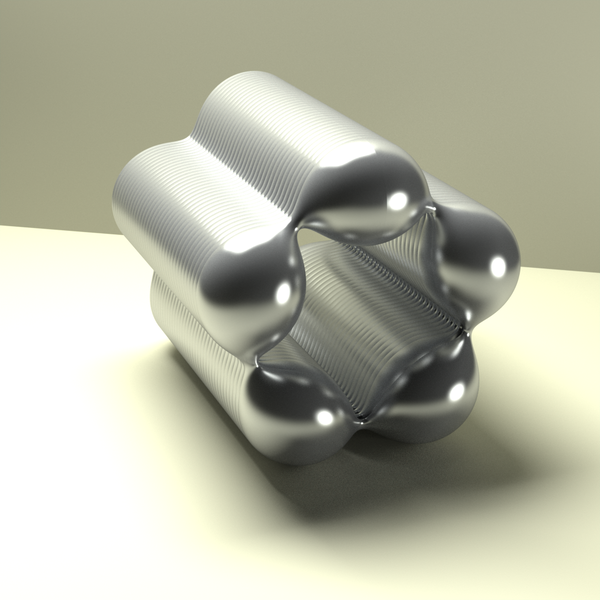

Constant mean curvature cylinders in euclidean 3-space
These constant mean curvature cylinders [3,2] have spectral genus two like the Wente tori, though only one period is closed. Their metric is given in terms of Jacobi elliptic functions [1,4].
A cylinder of spectral genus two, constructed by bifurcating off of the family of Delaunay nodoids.

A cylinder of spectral genus two, constructed by bifurcating off of the family of Delaunay nodoids.
References
U. Abresch, Constant mean curvature tori in terms of elliptic functions, J. Reine Angew. Math.374(1987), 169—192 [876223].
K. Grosse-Brauckmann, Bifurcations of the nodoids, Oberwolfach Report 24/2007, Progress in surface theory(2007).
R. Mazzeo and F. Pacard, Bifurcating nodoids, Topology and geometry: commemorating SISTAG, Contemp. Math., Amer. Math. Soc., Providence, RI(2002), 169—186 [1941630].
R. Walter, Explicit examples to the H-problem of Heinz Hopf, Geom. Dedicata23(1987), no. 2, 187—213 [892400].